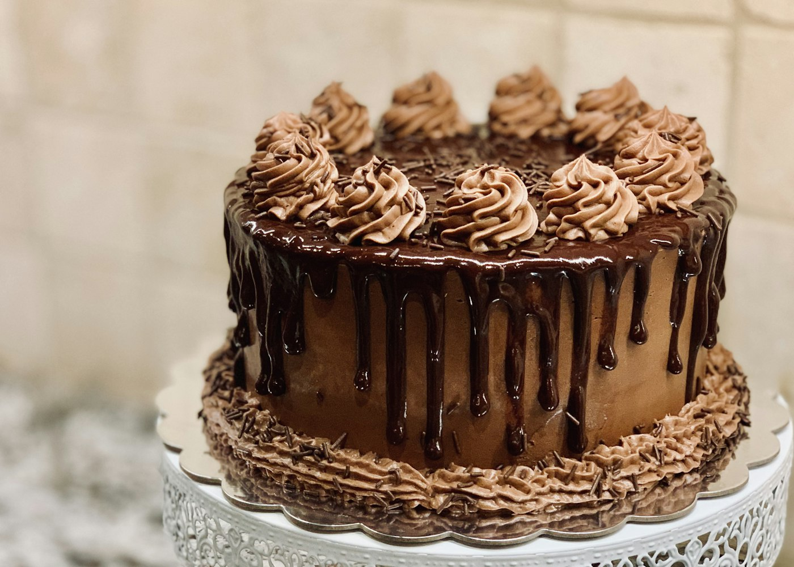

Bolos
Sabores clássicos com toque autoral.
CONFEITARIA ARTESANAL
Bolos e doces para transformar uma data especial em memória gostosa.
Por dentro
Imagens ilustrativas do universo deste projeto.


O que fazemos
Conheça as opções e escolha o que faz sentido para você.
Sabores clássicos com toque autoral.
Pequenas alegrias para a mesa.
Tudo pronto para comemorar.
Um bolo com a sua história.
Doces para um dia inesquecível.
Nossa essência
Na Doce Encanto, cada receita leva bons ingredientes, carinho e um pouco de celebração. Criamos encomendas para pequenos encontros e grandes festas.
Como funciona
Data, pessoas e inspiração.
Montamos a proposta com você.
Retire ou consulte entrega.
Em destaque
Sabores e decoração para sua ocasião.
Uma seleção que encanta os convidados.
Combinações práticas para celebrar.
Quem viveu, recomenda
“O bolo estava lindo e delicioso. Todo mundo perguntou de onde era.”
Isabela M., cliente
Antes de começar
Sugerimos pelo menos sete dias; consulte datas disponíveis.
Consulte as receitas e restrições com nossa equipe.
Vamos conversar
Deixe seus dados para simular o contato ou fale agora com nossa equipe.
Conversar no WhatsApp ↗